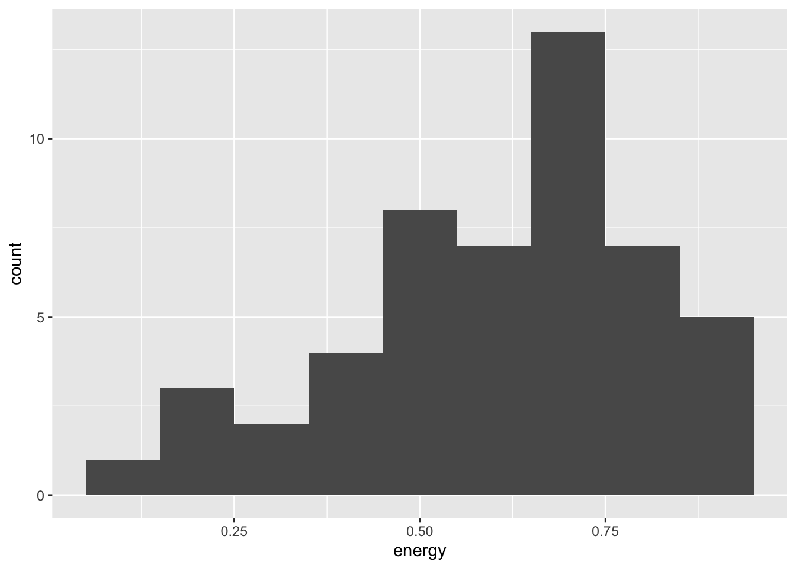
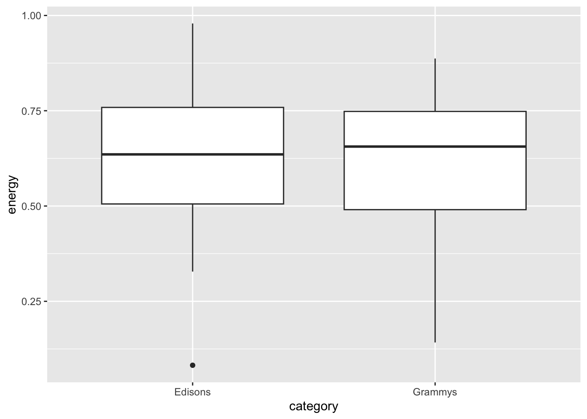
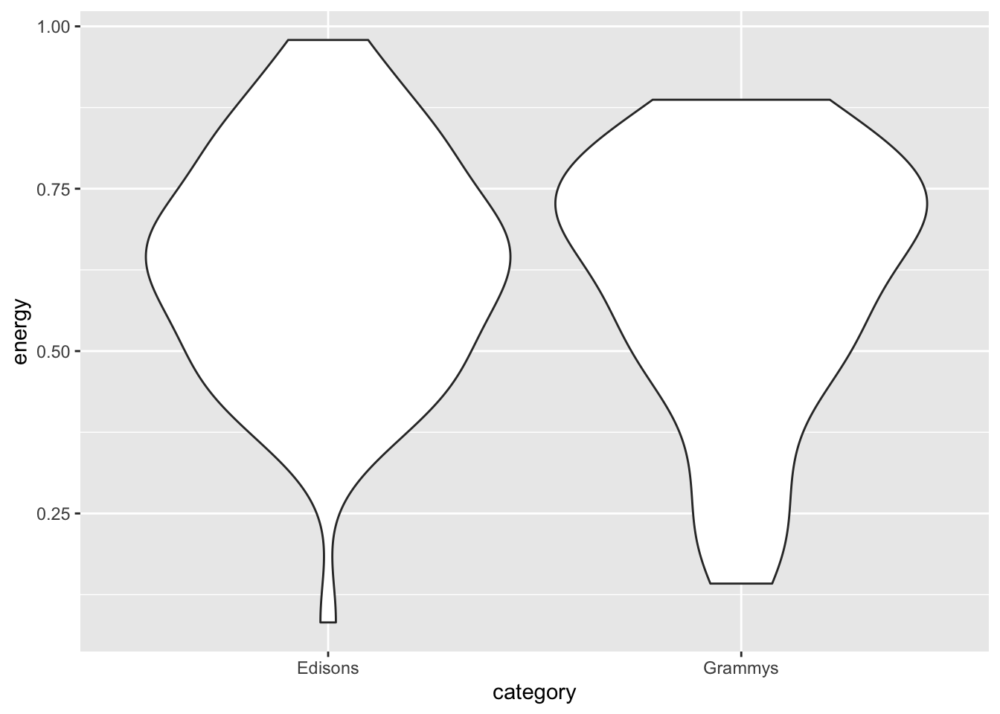
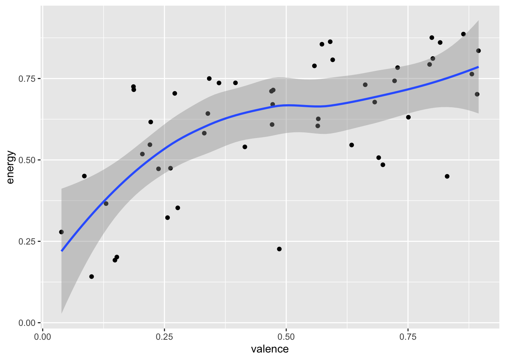
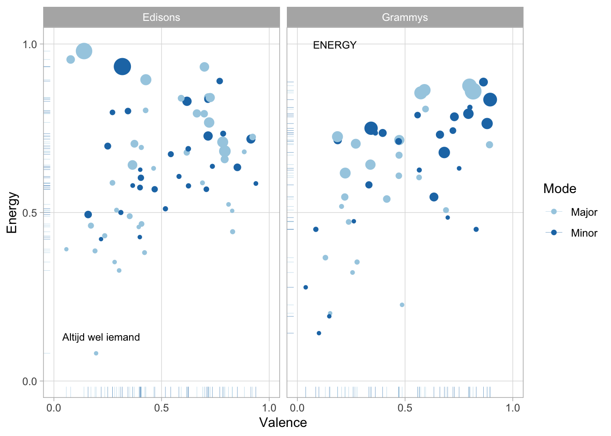

Visit the Spotify feature documentation. It is quite short – and Spotify provides no other explanation of what their features mean.
For each feature, discuss with your group which of the four ‘musical moments’ you think Spotify uses to compute it: 1. Pitch 2. Volume 3. Timbre 4. Duration/Time Some of them are obvious, and some of them are very much not!
Be prepared to discuss your conclusions with the class at the end of the breakout.
Review: Spotify, Github Pages, and R Markdown (15 min)
Breakout 2: ‘Let It Go’ (20 min)
Plenary Discussion: Breakout findings (5 min)
Demo: ggplot (15 min)
Breakout 3: Digster decade comparison (20 min)
Plenary Discussion: Breakout findings (10 min)
Breakout 2: ‘Let It Go’
If you interacted with any young children in your life a few years ago, you also surely interacted with the Disney hit ‘Let It Go’, from Frozen. More recently, ‘We Don’t Talk about Bruno’ from Encanto is fighting to take its place. What about these songs made them so irresistibly popular? You and your group will try to use the Spotify API to see if there is anything unusual about it.
Introduction
Every analysis you do for this class must start with the following two lines, which load the tidyverse and spotifyr packages.
The spotifyr library allows you to load information by track, album, artist, or playlist. I very strongly recommend using playlists.
All of the functions rely on Spotify URIs. You can copy them from spotify, but you need to delete the first parts (e.g., spotify:track:, spotify:album:, spotify:artist:, or spotify:playlist:) and keep only the alphanumeric nonsense at the end. Note also that get_playlist_audio_features() requires an extra blank string at the beginning, for historical reasons.
Sometimes you will get a warning message that mutate_() is deprecated as of dplyr 0.7.0. You can ignore it. The tidyverse package is undergoing some transition right now, and the spotifyr developers are still working to catch up.
After you load these features, the easiest way to look at them is to click on the variable in the Environment tab in the top-right pane of RStudio. That will open a full, sortable, spreadsheet-style summary of your data.
But you can also compute summary statistics with the summary() function.
Open the Disney Hits playlist on Spotify and load it into R, like the demo examples above. Look at the data, starting in spreadsheet form, and compare ‘Let It Go’ and ‘We Don’t Talk about Bruno’ to the other tracks on the playlist. Is there anything unusual about them? Be prepared to discuss your findings with the group.
If you have time, try identifying outliers on the playlist – tracks that have extreme and unusual values on one of the Spotify features – and listen to them. Do you agree with Spotify’s assessment?
Can you also agree on which track on the playlist is the most typical Disney hit? If so, how did you make your decision? If not, why does your group disagree?
Breakout 3: Digster Decade Comparisions
In this breakout session, you and your group will try to make the best visualisation you can to show the differences between the top pop hits of recent decades.
Introduction
Let’s start by loading playlists from the recent Grammy and Edison awards.
grammy <-get_playlist_audio_features("", "4kQovkgBZTd8h2HCM3fF31")edison <-get_playlist_audio_features("", "37i9dQZF1DX8mnKbIkppDf")
Next, let’s combine data sets with a labelling variable. This is the strategy I recommend for your portfolios: make a separate Spotify playlist for each category in your corpus, and then combine them with a category label like the example below.
awards <-bind_rows( grammy |>mutate(category ="Grammys"), edison |>mutate(category ="Edisons") )
The simplest data visualisation of a single, continuous variable is a histogram.
grammy |>ggplot(aes(x = energy)) +geom_histogram(binwidth =0.1)

If you want to compare a continuous variable across categories, you can use faceting (also known as small multiples), a boxplot or a violin plot.
awards |>ggplot(aes(x = category, y = energy)) +geom_boxplot()

awards |>ggplot(aes(x = category, y = energy)) +geom_violin()

To compare two continuous variables, you can create a scatter plot. If you have a large corpus and the points end up on top of each other, geom_jitter() adds some random noise without disturbing the overall pattern.
grammy |>ggplot(aes(x = valence, y = energy)) +geom_point() +geom_smooth()
`geom_smooth()` using method = 'loess' and formula = 'y ~ x'
grammy |>ggplot(aes(x = valence, y = energy)) +geom_jitter() +geom_smooth()
`geom_smooth()` using method = 'loess' and formula = 'y ~ x'

Good visualisations, of course, have many more components. Remember Tufte’s six design principles (2006):
Show comparisons, contrasts, differences.
Show causality, mechanism, explanation, systematic structure.
Show multivariate data; that is, show more than 1 or 2 variables.
Thoroughly describe the evidence. Provide a detailed title, indicate the authors and sponsors, document the data sources, show complete measurement scales, point out relevant issues.
Analytical presentations ultimately stand or fall on the quality, relevance, and integrity of their content.
awards |># Start with awards.mutate(mode =ifelse(mode ==0, "Minor", "Major") ) |>ggplot( # Set up the plot.aes(x = valence,y = energy,size = loudness,colour = mode ) ) +geom_point() +# Scatter plot.geom_rug(size =0.1) +# Add 'fringes' to show data distribution.geom_text( # Add text labels from above.aes(x = valence,y = energy,label = label ),data =tibble(label =c("Altijd wel iemand", "ENERGY"),category =c("Edisons", "Grammys"),valence =c(0.090, 0.123),energy =c(0.101, 0.967) ),colour ="black", # Override colour (not mode here).size =3, # Override size (not loudness here).hjust ="left", # Align left side of label with the point.vjust ="bottom", # Align bottom of label with the point.nudge_x =-0.05, # Nudge the label slightly left.nudge_y =0.02# Nudge the label slightly up. ) +facet_wrap(~category) +# Separate charts per playlist.scale_x_continuous( # Fine-tune the x axis.limits =c(0, 1),breaks =c(0, 0.50, 1), # Use grid-lines for quadrants only.minor_breaks =NULL# Remove 'minor' grid-lines. ) +scale_y_continuous( # Fine-tune the y axis in the same way.limits =c(0, 1),breaks =c(0, 0.50, 1),minor_breaks =NULL ) +scale_colour_brewer( # Use the Color Brewer to choose a palette.type ="qual", # Qualitative set.palette ="Paired"# Name of the palette is 'Paired'. ) +scale_size_continuous( # Fine-tune the sizes of each point.trans ="exp", # Use an exp transformation to emphasise loud.guide ="none"# Remove the legend for size. ) +theme_light() +# Use a simpler theme.labs( # Make the titles nice.x ="Valence",y ="Energy",colour ="Mode" )
Warning: Using `size` aesthetic for lines was deprecated in ggplot2 3.4.0.
ℹ Please use `linewidth` instead.

Instructions
Open the user profile for Digster Nederland and look at their public playlists. You will see four decade-based playlists: - All 00’s Top Hits, - All 90’s Top Hits, - All 80’s Top Hits, and - All 70’s Top Hits. Choose any two decades you want to compare, and make the best visualisation you can that shows the differences between the two decades. Also choose a member of your group who will be prepared to share their screen at the end of the breakout and show off your results. But above all, help each other so that every member of your group leaves with some working code.
Start simple, and gradually add details like the ones in the fancy final example.